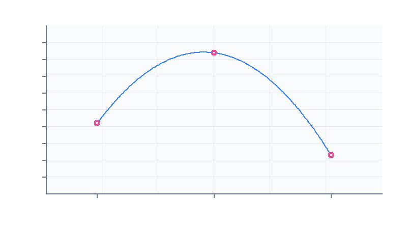

进行中
示例记录：一篇实验记录该怎么写
把「目的 → 装置与参数 → 步骤 → 原始数据 → 分析 → 结论」这条链子完整走一遍，顺便演示表格、代码块、Mermaid 图和带编号的插图。看明白了就可以整篇删掉。
这是一篇示例记录，作用是演示写作模板和所有可用的排版能力。 真正的项目请从「目的与假设」开始写，把这段引用删掉。
目的与假设
要验证的问题用一句话写清楚：沉积速率提高时，薄膜的结晶度是变好还是变差？
预期是速率过高会让晶粒来不及长大、结晶度下降，所以曲线应该先升后降。 把预期明确写出来的好处是——结果和预期不一致时，你会立刻注意到，而不是 顺手把结论改成「符合预期」。
假设的边界
只讨论 200–500 nm 这一厚度区间；更薄的膜表面效应占主导，不在本次范围内。
装置与参数
仪器：磁控溅射台（靶材 99.99% Cu）、XRD（Cu Kα，λ = 1.5406 Å）。
| 参数 | 取值 | 说明 |
|---|---|---|
| 本底真空 | 5×10⁻⁴ Pa | 抽到该值后再通Ar |
| 工作气压 | 0.5 Pa | 全程恒定 |
| 溅射功率 | 100 / 150 / 200 W | 自变量 |
| 衬底温度 | 室温 | 不做额外加热 |
| 沉积时间 | 10 min | 保证厚度可比 |
参数表的意义在于别人能复现。凡是「差不多」「适当」这类词都要换成数值。
步骤
- 抽真空至 5×10⁻⁴ Pa，通 Ar 至 0.5 Pa，稳定 5 分钟。
- 按设定功率溅射 10 min，记录起止时间。
- 取出样品，做 XRD 扫描（2θ = 30°–80°，步长 0.02°）。
- 用下面的脚本从原始
.xy文件里提取峰位与半高宽。
import numpy as np
def crystallite_size(two_theta, fwhm, wavelength=1.5406):
"""用谢乐公式估算晶粒尺寸（nm）。fwhm 用弧度。"""
theta = np.radians(two_theta / 2)
return 0.9 * wavelength / (fwhm * np.cos(theta))
def load_xy(path):
"""读取衍射仪导出的两列文本，跳过以 # 开头的表头。"""
data = np.loadtxt(path, comments='#')
return data[:, 0], data[:, 1]脚本要连同输入文件长什么样一起记下来。半年后你只会记得 「有个脚本处理过数据」，不会记得它期望的格式。
原始数据
三个功率各测一次，峰位与半高宽汇总如下：
| 功率 (W) | 2θ (°) | FWHM (°) | 估算晶粒尺寸 (nm) |
|---|---|---|---|
| 100 | 43.31 | 0.62 | 14.2 |
| 150 | 43.29 | 0.48 | 18.4 |
| 200 | 43.35 | 0.71 | 12.3 |


原始文件放在项目目录里一起提交，别只留一张图——图是自己画的， 而原始数据是别人能重新分析的唯一依据。
# 100W.xy
# 2theta intensity
30.00 112
30.02 118
...分析与讨论
处理流程本身很简单，但每一步都要留下中间产物：
flowchart LR
A[原始 .xy 文件] --> B[去背底]
B --> C[寻峰 / 拟合]
C --> D[FWHM]
D --> E[谢乐公式]
E --> F[晶粒尺寸]
C --> G[峰位漂移]
150 W 的样品半高宽最小、晶粒最大，与假设一致；200 W 时半高宽反而变大，
说明功率过高时形核速率过快，晶粒来不及长大。这一段的判据是
FWHM(150) < FWHM(100) < FWHM(200)，恰好对应晶粒尺寸的反序。
需要注意的一个坑：三个样品的厚度并不完全相同（沉积时间相同但速率不同）， 所以严格说这不是「只改了一个变量」。下一轮要把厚度也测出来归一化。
结论与下一步
- 三个功率的样品全部完成 XRD 扫描
- 建立从原始文件到晶粒尺寸的处理链
- 补测膜厚，把晶粒尺寸对厚度归一化
- 增加 175 W 和 225 W 两个点，确认极值位置
- 换用掠入射 XRD 测更薄的样品